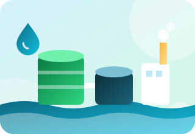

ইটিপি ডিজাইন
পরিশোধিত বর্জ্যপানি, মানসম্মত নির্গমন
আমরা এমন ইফ্লুয়েন্ট ট্রিটমেন্ট প্ল্যান্ট ডিজাইন করি, যা আপনার কারখানার প্রকৃত বর্জ্যপানি ও জায়গার সাথে মানানসই এবং যা আপনার অপারেটররা প্রতিদিন চালাতে পারেন।
- বর্জ্যপানির বৈশিষ্ট্য নিরূপণ ও প্রবাহ হিসাব
- শোধন প্রক্রিয়া নির্বাচন ও আকার নির্ধারণ
- লেআউট, প্রসেস ড্রয়িং ও ডিজাইন প্রতিবেদন
- পরিবেশ অধিদপ্তরের নির্গমন মানমাত্রার সাথে মিলিয়ে দেখা
- পরিচালনা ও পরিবীক্ষণ বিষয়ে দিকনির্দেশনা